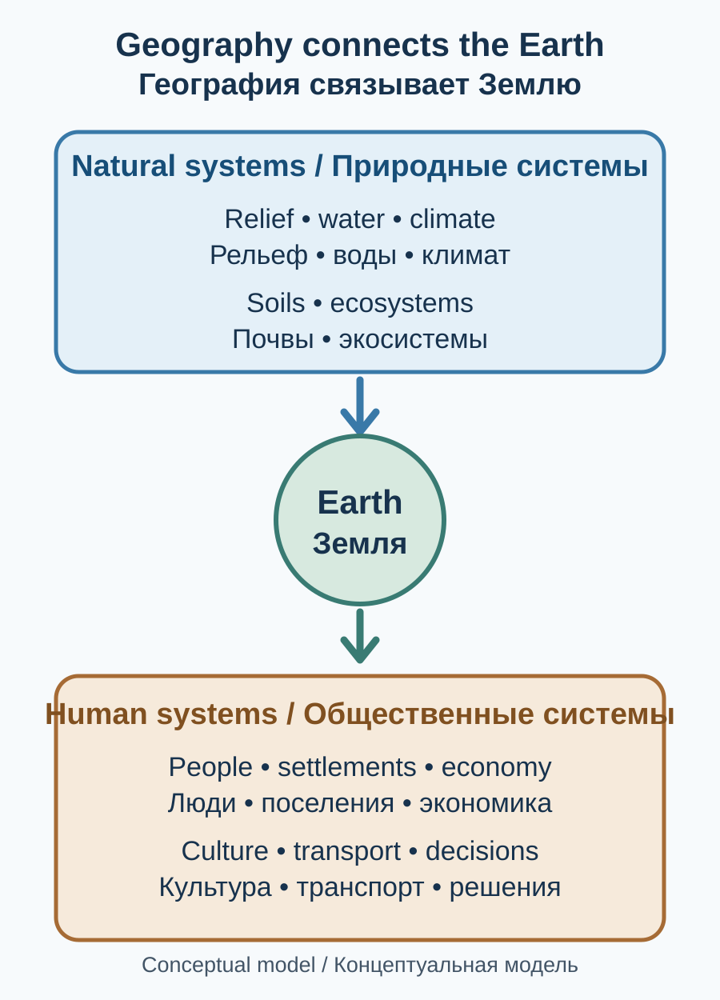
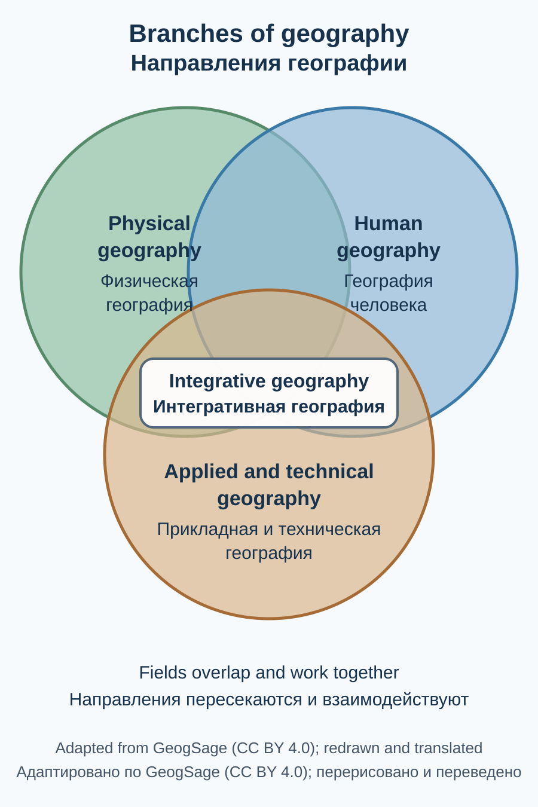
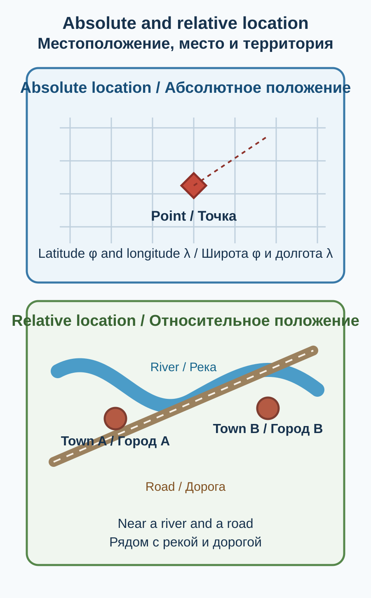
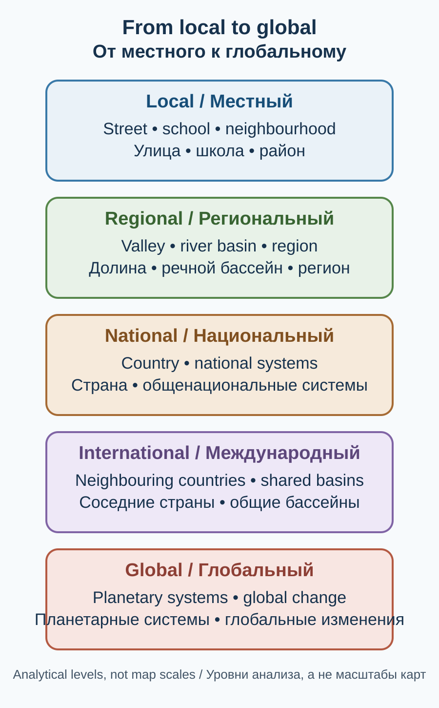
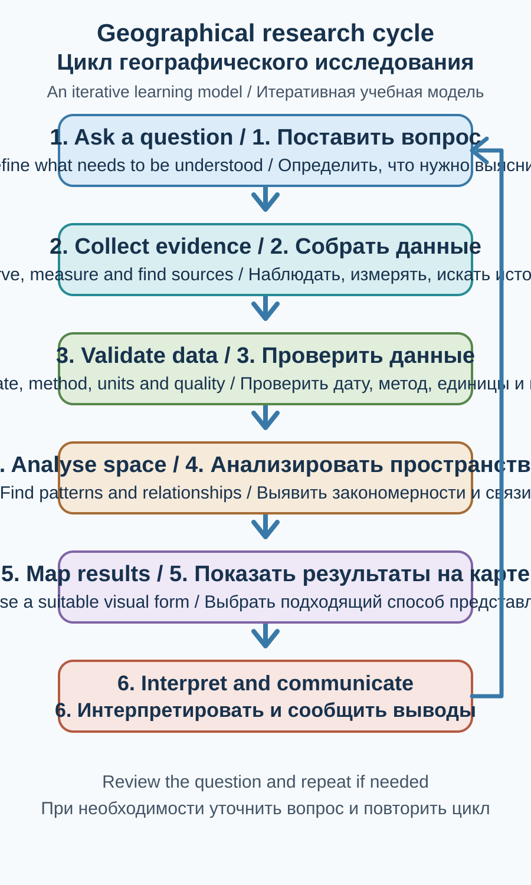

Глава 1. География как наука: Земля, пространство и взаимосвязи
Chapter 1. Geography as a Science: Earth, Space and Connections
Цели главыChapter Objectives
После изучения главы читатель сможет:
- объяснить, что изучает география и почему она объединяет естественные и общественные науки;
- различать географическое пространство, территорию, место, масштаб и пространственный процесс;
- описывать взаимосвязь физической и социально-экономической географии;
- понимать роль наблюдений, полевых исследований, статистики, карт, ГИС и дистанционного зондирования;
- критически читать карту и оценивать происхождение географических данных;
- применять географический подход к повседневным и глобальным проблемам.
After studying this chapter, readers will be able to:
- explain what geography studies and why it connects the natural and social sciences;
- distinguish geographical space, territory, place, scale and spatial process;
- describe the relationship between physical and human geography;
- explain the role of observation, fieldwork, statistics, maps, GIS and remote sensing;
- read maps critically and assess the provenance of geographical data; and
- apply geographical thinking to everyday and global issues.
1.1. Что такое география?What Is Geography?

01-A. Авторская двуязычная схема для Atlas of Knowledge. Это концептуальная модель взаимосвязей, а не карта или статистическая визуализация. / Original bilingual schematic for Atlas of Knowledge.This is a conceptual model of connections, not a map or statistical visualisation. Лицензия / Licence: CC BY-NC 4.0. Атрибуция / Attribution: Atlas of Knowledge project.
География — наука о Земле как общем доме человечества и о пространственных различиях, связях и изменениях природных и общественных явлений. Она изучает, где происходят процессы, почему они складываются именно так, как связаны между собой разные территории и как меняются со временем.
Название науки восходит к древнегреческим словам gē — «Земля» и graphō — «пишу», «описываю». Но современная география давно вышла за рамки описания мест. Она объясняет механизмы природных процессов, исследует расселение и хозяйство, анализирует потоки людей, товаров, воды и информации, оценивает риски и помогает принимать пространственно обоснованные решения.
Географический вопрос редко ограничивается одним объектом. Например, чтобы понять, почему город растёт именно в определённом месте, нужно рассмотреть рельеф, воду, климат, транспорт, историю, рынок труда, государственную политику и связи с другими поселениями.
Главная идея географии: природные и общественные явления распределены по поверхности Земли не случайно. Их размещение формируется взаимодействием природных условий, истории, технологий, экономики, культуры и решений людей.
1.2. Объект, предмет и географическое мышлениеObject, Subject and Geographical Thinking
В учебной практике полезно различать объект и предмет исследования.
- Объект — часть реального мира, которую изучают: река, город, горная система, население страны, климатический процесс или сеть транспортных маршрутов.
- Предмет — конкретные свойства, отношения и закономерности объекта, на которых сосредоточено исследование: распределение, причины размещения, взаимодействия, изменения и последствия.
Один и тот же объект может изучаться разными науками. Реку исследуют гидрология, геология, экология, экономика и право. География рассматривает реку также как пространственную систему: где расположен её бассейн, как связаны верховья и низовья, какие поселения зависят от воды, как распределяются риски паводков и как использование реки в одной части бассейна влияет на другие территории.
Географическое мышление опирается на несколько взаимодополняющих вопросов:
- Местоположение: где находится явление и как его положение определить?
- Распределение: как объекты размещены на территории — равномерно, группами, линейно или изолированно?
- Масштаб: меняется ли объяснение при переходе от местного уровня к региональному и глобальному?
- Взаимосвязь: какие процессы и территории влияют друг на друга?
- Изменение: как явление развивалось в прошлом и какие изменения наблюдаются сейчас?
- Значение и последствия: для кого важны эти изменения и какие решения могут быть приняты?
1.3. География в системе наукGeography among the Sciences
География находится на пересечении естественных, общественных и технических дисциплин. Её междисциплинарность — не случайное объединение тем, а способ изучать сложные системы, которые невозможно полноценно понять с позиции одной науки.
Физическая географияPhysical Geography
Физическая география исследует природные компоненты, процессы и территориальные комплексы. К её направлениям относятся:
- геоморфология — формы рельефа и процессы их формирования;
- климатология и метеорология — климат, погода и атмосферные процессы;
- гидрология и океанология — воды суши и Мировой океан;
- биогеография — географическое распространение организмов и экосистем;
- география почв — пространственные закономерности почвенного покрова;
- ландшафтоведение — природные территориальные комплексы и их динамика;
- криосферные исследования — ледники, снежный покров и многолетняя мерзлота.
Социально-экономическая географияHuman and Economic Geography
Социально-экономическая география изучает население, расселение, хозяйство, культуру, политику и территориальную организацию общества. Её направления включают:
- географию населения и демографию;
- географию городов и сельских поселений;
- экономическую и промышленную географию;
- транспортную географию и логистику;
- политическую географию;
- культурную и историческую географию;
- географию туризма и услуг;
- региональные исследования и географию развития.
Термин human geography в англоязычной традиции шире буквального перевода «социально-экономическая география»: он охватывает также культурные, политические, исторические и другие пространственные аспекты человеческой жизни.
Интегративные и прикладные направленияIntegrative and Applied Geography
Многие современные задачи требуют соединить природный и общественный анализ. География окружающей среды, управление водными ресурсами, оценка природных рисков, территориальное планирование, геоинформатика и устойчивое развитие используют знания нескольких направлений одновременно.
Например, оценка риска наводнения включает рельеф и осадки, характеристики речного бассейна, землепользование, расположение домов и дорог, уязвимость населения и готовность служб реагирования.

01-D. Перерисовано и переведено по схеме GeogSage, “BranchesOfGeography.png” (CC BY 4.0); категории уточнены для структуры этой главы.Redrawn and translated from GeogSage, “BranchesOfGeography.png” (CC BY 4.0); categories adapted to this chapter. Источник и лицензия / Source and licence.
1.4. Географическое пространство, место и территорияGeographical Space, Place and Territory

01-B. Авторская учебная схема; условные объекты не обозначают реальные координаты или поселения.Original educational schematic; features do not represent real coordinates or settlements. Лицензия / Licence: CC BY-NC 4.0. Атрибуция / Attribution: Atlas of Knowledge project.
Эти понятия близки, но не тождественны.
- Географическое пространство — система расположений, расстояний, связей и отношений между природными и общественными объектами.
- Место — конкретная точка или местность, обладающая физическими характеристиками, историей, значением и опытом людей.
- Территория — часть земной поверхности, рассматриваемая в определённых границах; границы могут быть административными, государственными, природными, хозяйственными или условными.
- Регион — территория, выделенная по одному или нескольким признакам: природным, культурным, экономическим, историческим или административным.
- Ландшафт — целостный территориальный комплекс взаимосвязанных природных компонентов; в более широких исследованиях учитываются также результаты человеческой деятельности.
Границы регионов зависят от задачи. Бассейн реки определяется водоразделом, область — административным законом, климатический регион — сходством климатических характеристик. Эти границы могут пересекаться, но не обязаны совпадать.
Абсолютное и относительное местоположениеAbsolute and Relative Location
Абсолютное местоположение задаётся координатами или другой системой точного позиционирования. Относительное местоположение описывает положение объекта по отношению к другим объектам: рядом с рекой, на пересечении дорог, в нескольких часах пути от столицы.
Для практических задач относительное положение иногда важнее геометрического расстояния. Два населённых пункта могут находиться близко по прямой, но быть разделены горным хребтом, рекой без моста или сезонно непроходимой дорогой.
1.5. Пространственные закономерности и процессыSpatial Patterns and Processes
Географы изучают не только отдельные места, но и рисунок распределения объектов.
Основные типы пространственных закономерностей:
- рассеянное распределение — объекты удалены друг от друга;
- кластерное распределение — объекты образуют группы и скопления;
- линейное распределение — объекты вытянуты вдоль реки, побережья, дороги или долины;
- равномерное распределение — расстояния между объектами относительно сходны;
- центрально-периферийная структура — концентрация функций и ресурсов в ядре при иной интенсивности на периферии.
Пространственный рисунок сам по себе не объясняет причину. Скопление городов вдоль побережья может быть связано с портами, равнинным рельефом, историческими торговыми путями и доступом к ресурсам. Для вывода нужно сопоставить несколько объяснений и проверить их данными.
В географии важны также потоки и взаимодействия: ежедневные поездки на работу, миграция, торговля, движение воды, перенос загрязнителей, туристические маршруты и цифровые коммуникации. Территории связаны не только соседством, но и обменом.
1.6. Географический масштаб и уровни анализаGeographical Scale and Levels of Analysis
Географический масштаб — один из ключевых инструментов исследования. Одно явление может выглядеть по-разному на разных уровнях:
- локальный: улица, село, городской район, долина;
- региональный: область, горная система, речной бассейн, часть страны;
- национальный: государство и его внутренние различия;
- международный: соседние страны, трансграничные регионы и сети;
- глобальный: процессы планетарного масштаба.
Масштаб карты и масштаб исследования — связанные, но разные понятия. Масштаб карты показывает отношение расстояния на карте к расстоянию на местности. Масштаб исследования определяет пространственный уровень, на котором задаётся вопрос.
Нельзя автоматически переносить закономерность одного уровня на другой. Средняя температура страны не описывает климат каждого её района; национальный показатель безработицы не показывает различия между городами и сельскими территориями. Это пример опасности чрезмерного обобщения.

01-E. Авторская условная схема масштаба исследования; это не серия географических карт и не иллюстрация масштаба карты.Original schematic of analytical scale; not a set of geographic boundary maps or an illustration of cartographic scale. Лицензия / Licence: CC BY-NC 4.0. Атрибуция / Attribution: Atlas of Knowledge project.
1.7. Методы географического исследованияMethods of Geographical Research

01-C. Авторская двуязычная схема; последовательность отражает итеративный характер исследования.Original bilingual schematic; the sequence reflects the iterative nature of research. Лицензия / Licence: CC BY-NC 4.0. Атрибуция / Attribution: Atlas of Knowledge project.
Географическое исследование начинается с чёткого вопроса и выбора подходящих данных. Универсального метода для всех задач нет.
Наблюдение и полевые исследованияObservation and Fieldwork
Полевые методы позволяют изучать явления непосредственно на местности: измерять температуру и расход воды, описывать почвенный профиль, фиксировать состояние растительности, проводить опросы, фотографировать объекты и проверять картографические данные.
Полевое наблюдение должно иметь понятную методику: место и время, приборы, единицы измерения, выборку, условия и ограничения. Одно наблюдение редко позволяет сделать вывод о длительной тенденции.
Статистика и пространственный анализStatistics and Spatial Analysis
Статистические данные помогают сравнивать территории, выявлять тенденции и оценивать различия. При анализе важно проверять:
- год и период наблюдений;
- единицы измерения и определения показателей;
- территориальные границы и изменения административного деления;
- способ сбора данных и полноту охвата;
- сопоставимость источников.
Пространственный анализ исследует расстояния, соседство, концентрацию, доступность, пересечения и связи между объектами. Корреляция двух показателей не доказывает, что один из них является причиной другого.
Карты, ГИС и дистанционное зондированиеMaps, GIS and Remote Sensing
Карта — одновременно способ представления информации и инструмент анализа. Геоинформационные системы (ГИС) позволяют хранить, сопоставлять и анализировать пространственные данные. Дистанционное зондирование Земли (ДЗЗ) предоставляет сведения о поверхности по спутниковым и авиационным измерениям.
Эти методы подробно рассматриваются в главах 14–16. Они не отменяют необходимость проверки данных: изображение может быть облачным или устаревшим, координаты — неточными, а классификация — ошибочной.
Сравнительный и исторический методыComparative and Historical Methods
Сравнение территорий помогает выявить сходства и различия, а исторический анализ — понять, как сформировались современное расселение, границы, транспортные сети и землепользование. Для корректного сравнения нужно учитывать разные исторические условия и методики сбора информации.
1.8. Карта как язык географииThe Map as the Language of Geography
Карта передаёт пространственную информацию с помощью масштаба, проекции, условных знаков, цветов, подписей и легенды. Она не является нейтральной копией поверхности Земли: любой картографический продукт создаётся для определённой цели и неизбежно отбирает и обобщает информацию. Проекция — это способ перенести координаты с кривой поверхности Земли на плоскость. При таком переносе неизбежно возникают искажения: разные проекции по-разному сохраняют площади, формы, расстояния или направления; ни одна плоская карта не сохраняет всё одновременно. Поэтому проекцию выбирают с учётом назначения карты и того свойства, которое особенно важно показать.
При чтении карты задайте вопросы:
- Кто создал карту и для какой задачи?
- Какова дата исходных данных?
- Каковы масштаб, проекция и охват территории?
- Что показывают цвета, символы и линии?
- Какие объекты не отображены или обобщены?
- Есть ли источник данных, легенда и пояснения к спорным или неопределённым сведениям?
Одна и та же территория может выглядеть по-разному на физической, политической, климатической, демографической и экономической картах. Это не обязательно противоречие: карты показывают разные характеристики пространства.
1.9. География в повседневной жизни и общественных решенияхGeography in Everyday Life and Public Decisions
География помогает отвечать на практические вопросы:
- где безопаснее строить жильё с учётом оползней, паводков и других опасностей;
- как организовать общественный транспорт и доступ к больницам и школам;
- почему засуха в одном регионе влияет на цены и занятость в другом;
- как изменение климата отражается на ледниках, водоснабжении и сельском хозяйстве;
- где следует создавать охраняемые природные территории;
- как сделать туристические маршруты доступными, не разрушая природное и культурное наследие.
Географический анализ не заменяет общественное обсуждение, инженерную экспертизу или правовую оценку. Он помогает увидеть пространственные последствия вариантов решения и объяснить, какие группы населения и территории могут выиграть или столкнуться с рисками.
1.10. География мира и место КыргызстанаWorld Geography and the Place of Kyrgyzstan
Атлас построен от общих закономерностей к региональному и страноведческому анализу. Сначала рассматриваются географическая оболочка Земли, литосфера, рельеф, атмосфера, воды, биосфера, почвы, население, политическая и экономическая география, регионы мира, экологические изменения и современные географические технологии.
Затем географические подходы применяются к Кыргызстану — горной стране в Центральной Азии. Её природные системы, население, хозяйство и транспорт невозможно понять изолированно: они связаны с Тянь-Шанем и Памиро-Алаем, речными бассейнами, климатом, соседними государствами, историческими маршрутами и международными экономическими отношениями.
В энциклопедической части особое внимание уделяется всем семи областям Кыргызстана: Баткенской, Джалал-Абадской, Иссык-Кульской, Нарынской, Ошской, Таласской и Чуйской. Бишкек и Ош имеют статус городов республиканского значения и в административно-статистических материалах рассматриваются отдельно от областей. Для каждой области важно рассматривать не только административные границы, но и природную основу, население, поселения, экономику, транспорт, культурное наследие, экологические проблемы и перспективы развития.
1.10.1. Практический пример: как читать масштаб картыWorked Example: Reading a Map Scale
Предположим, на карте указан численный масштаб 1:50 000. Это означает, что 1 единица длины на карте соответствует 50 000 таким же единицам на местности.
Шаг 1. Переводим масштаб в удобные единицы.
1 см на карте соответствует 50 000 см на местности. Поскольку 100 000 см = 1 км, получаем: 1 см = 0,5 км, или 500 м.
Шаг 2. Измеряем расстояние.
Если расстояние между двумя точками на карте по прямой составляет 4 см, расстояние на местности по прямой равно:
4 × 0,5 км = 2 км.
Шаг 3. Правильно интерпретируем результат.
Полученные 2 км — это расстояние по прямой, а не длина дороги и не время в пути. Реальный маршрут может быть длиннее из-за рельефа, изгибов дороги, рек, мостов и других препятствий. Если карта была изменена в размере при печати или отображении, измерять линейкой по ней можно только после проверки масштаба по масштабной линейке.
Вывод. Масштаб позволяет переводить измерения на карте в расстояния на местности, но не даёт автоматически информации о доступности или продолжительности поездки.
Проверьте себя: чему соответствует 3 см на карте масштаба 1:100 000?
Ответ для самопроверки: 3 км.
Worked Example: Reading a Map Scale
Suppose a map has a representative fraction of 1:50,000. This means that one unit of length on the map represents 50,000 of the same units on the ground.
Step 1. Convert the scale into convenient units.
One centimetre on the map represents 50,000 centimetres on the ground. Since 100,000 cm = 1 km, 1 cm represents 0.5 km, or 500 m.
Step 2. Measure the distance.
If the straight-line distance between two points on the map is 4 cm, the corresponding straight-line ground distance is:
4 × 0.5 km = 2 km.
Step 3. Interpret the result correctly.
The 2 km is a straight-line distance, not the length of a road or travel time. The actual route may be longer because of relief, road bends, rivers, bridges and other obstacles. If the map has been resized for printing or display, a ruler measurement is reliable only after checking the scale bar.
Conclusion. A map scale converts map measurements into ground distances, but it does not automatically tell us how accessible a place is or how long a journey will take.
Check your understanding: What ground distance does 3 cm represent on a map with a scale of 1:100,000?
Self-check answer: 3 km.
1.10.2. Как масштаб анализа меняет географический выводHow the Scale of Analysis Changes a Geographic Conclusion
Один и тот же процесс может выглядеть по-разному на уровне дома, квартала, города, региона и страны. При переходе между масштабами меняются не только детализация карты, но и единицы наблюдения, средние значения и видимые связи.
Пример. Средний доход по городу может расти, хотя в отдельных районах он снижается. Общегородское среднее скрывает различия между районами и группами населения. Обратная ошибка — переносить вывод об одном квартале на весь город. Это связано с проблемой изменяемых пространственных единиц (modifiable areal unit problem, MAUP): статистическая связь может меняться при изменении границ и размера территориальных единиц.
Как избежать ошибки: формулировать вывод на том же уровне, на котором собраны данные; сравнивать несколько вариантов территориального деления; показывать распределение, а не только среднее; не делать выводы об отдельных людях по агрегированной статистике районов (экологическая ошибка).
Задание. Представьте данные о среднем времени поездки до школы по районам города. Объясните, какие выводы допустимы для районов и города, и почему районное среднее не определяет время поездки конкретного ученика.
1.10.2. How the Scale of Analysis Changes a Geographic Conclusion
The same process may look different at the scale of a household, neighbourhood, city, region or country. When scale changes, not only map detail but also units of observation, averages and visible relationships may change.
Example. Average city income may rise even while income falls in some neighbourhoods. The citywide average hides differences between areas and population groups. The opposite error is to generalise from one neighbourhood to the whole city. This relates to the modifiable areal unit problem (MAUP): a statistical relationship may change when territorial boundaries or unit sizes change.
How to avoid the error: state conclusions at the same level at which data were collected; compare alternative zoning schemes; show distributions rather than averages alone; and do not infer individual characteristics from area-level statistics (the ecological fallacy).
Activity. Imagine data on average travel time to school by city district. Explain which conclusions are valid for districts and the city, and why a district average cannot determine an individual student's travel time.
1.11. Практические заданияPractical Activities
Задание 1. География одного места
Выберите населённый пункт. Опишите его абсолютное и относительное местоположение, рельеф, водные объекты, транспортные связи и соседние территории. Отделите проверенные факты от предположений.
Задание 2. Один объект — разные науки
Выберите реку, гору или город. Составьте таблицу: какие вопросы об объекте задают геология, экология, экономика, история и география? Найдите вопросы, для ответа на которые требуется сотрудничество дисциплин.
Задание 3. Пространственный рисунок
На карте района отметьте школы, медицинские учреждения или остановки транспорта. Определите, образуют ли они кластеры, линейные структуры или относительно равномерную сеть. Не делайте выводов о доступности только по расстоянию по прямой.
Задание 4. Проверка карты
Найдите тематическую карту в интернете. Запишите автора, дату, источник данных, масштаб, проекцию (если указана), легенду и ограничения. Объясните, какие решения можно и нельзя принимать на основе этой карты.
Задание 5. Географическая история территории
Выберите местность и проследите её изменения по двум или более картам разных лет. Сравните дороги, поселения, землепользование и водные объекты. Укажите, если карты имеют разные масштабы или классификации.
1.12. Основные понятияKey Terms
| Русский термин | English term | Краткое значение |
|---|---|---|
| География | Geography | Наука о пространственных различиях, связях и изменениях на Земле |
| Физическая география | Physical geography | Изучение природных компонентов и процессов |
| География человека | Human geography | Изучение пространственных аспектов человеческой жизни |
| Географическое пространство | Geographical space | Система расположений, расстояний и связей |
| Место | Place | Конкретная местность с природными и общественными характеристиками |
| Территория | Territory | Часть земной поверхности в заданных границах |
| Регион | Region | Территория, выделенная по определённым признакам |
| Масштаб исследования | Scale of analysis | Пространственный уровень географического вопроса |
| Масштаб карты | Map scale | Отношение расстояния на карте к расстоянию на местности |
| Пространственное распределение | Spatial distribution | Размещение объектов на территории |
| Пространственный анализ | Spatial analysis | Методы исследования расположения и территориальных связей |
| Геоинформационная система | Geographic Information System (GIS) | Система работы с пространственными данными |
| Дистанционное зондирование | Remote sensing | Получение сведений об объекте без непосредственного контакта |
| Полевое исследование | Fieldwork | Сбор данных непосредственно на местности |
| Ландшафт | Landscape | Территориальный комплекс взаимосвязанных компонентов |
1.13. Контрольные вопросыReview Questions
- Почему география не сводится к запоминанию стран, столиц и названий объектов?
- Чем объект исследования отличается от предмета исследования?
- Какие задачи относятся к физической географии, а какие — к географии человека?
- Почему один и тот же объект может изучаться несколькими науками?
- Чем абсолютное местоположение отличается от относительного?
- Почему границы природного региона могут не совпадать с административными границами?
- Как меняется понимание явления при переходе от локального масштаба к глобальному?
- Почему корреляция двух пространственных показателей не доказывает причинную связь?
- Какие сведения необходимо проверить перед использованием тематической карты?
- Почему для изучения горной страны, такой как Кыргызстан, важно одновременно учитывать природные и общественные процессы?
1.1. What Is Geography?
Это концептуальная модель, а не карта или статистическая визуализация. Licence: CC BY-NC 4.0. Attribution: Atlas of Knowledge project. / Лицензия: CC BY-NC 4.0. Атрибуция: Atlas of Knowledge project.01-A. Original bilingual schematic for Atlas of Knowledge. It is a conceptual model, not a map or statistical visualisation. / Авторская двуязычная схема для Atlas of Knowledge.
Geography is the study of Earth as humanity's shared home and of the spatial differences, connections and changes that shape natural and human phenomena. It asks where processes occur, why they take place in particular ways, how places are connected and how they change over time.
The name comes from the ancient Greek words gē (“Earth”) and graphō (“I write” or “describe”). Modern geography, however, goes far beyond describing places. It explains natural processes, studies settlement and economic activity, analyses the movement of people, goods, water and information, assesses risks and supports decisions informed by spatial evidence.
A geographical question rarely concerns only one object. To understand why a city has grown in a particular location, for example, we need to consider relief, water, climate, transport, history, labour markets, public policy and connections with other settlements.
The central idea of geography: natural and human phenomena are not distributed randomly across Earth's surface. Their locations and patterns are shaped by interactions among environmental conditions, history, technology, economics, culture and human decisions.
1.2. Object, Subject and Geographical Thinking
In geographical research, it is useful to distinguish between the object and the subject of study.
- Object — the part of the real world being investigated: a river, city, mountain system, national population, climatic process or transport network.
- Subject — the particular properties, relationships and patterns of that object on which the research focuses: distribution, location, interactions, change and consequences.
The same object can be studied by several disciplines. A river may be investigated by hydrology, geology, ecology, economics and law. Geography also examines it as a spatial system: where its basin lies, how the upper and lower reaches are connected, which settlements depend on its water, how flood risks are distributed and how water use in one part of the basin affects other places.
Geographical thinking uses several complementary questions:
- Location: Where is the phenomenon, and how can its position be established?
- Distribution: How are objects arranged—uniformly, in clusters, in lines or in isolation?
- Scale: Does the explanation change when moving from local to regional or global analysis?
- Connection: Which processes and places influence one another?
- Change: How did the phenomenon develop, and what changes are occurring now?
- Significance and consequences: Who is affected, and what decisions might be made?
1.3. Geography among the Sciences
Перерисовано и переведено по схеме GeogSage, “BranchesOfGeography.png” (CC BY 4.0); категории уточнены для этой главы. Source and licence / Источник и лицензия.01-D. Redrawn and translated from GeogSage, “BranchesOfGeography.png” (CC BY 4.0); categories adapted to this chapter.
Geography lies at the intersection of the natural, social and technical sciences. Its interdisciplinary character is not simply a collection of unrelated topics; it is a way of studying complex systems that cannot be fully understood from the perspective of one discipline alone.
Physical geography investigates natural components, processes and territorial systems. Its fields include geomorphology (landforms and the processes that shape them), climatology and meteorology (climate, weather and atmospheric processes), hydrology and oceanography (inland waters and the world ocean), biogeography (the distribution of organisms and ecosystems), soil geography, landscape studies and cryosphere research.
Human and economic geography studies population, settlement, economic activity, culture, politics and the spatial organisation of society. Its fields include population geography and demography; urban and rural settlement; economic and industrial geography; transport and logistics; political, cultural and historical geography; tourism and service geography; and regional and development studies.
The English term human geography is broader than the literal translation “socio-economic geography”: it also includes cultural, political, historical and other spatial aspects of human life.
Integrative and applied geography connects natural and human analysis. Environmental geography, water-resource management, natural-hazard assessment, spatial planning, geoinformatics and sustainable development all draw on several fields. For example, flood-risk assessment combines relief and rainfall, river-basin characteristics, land use, the location of homes and roads, population vulnerability and emergency preparedness.
1.4. Geographical Space, Place and Territory
01-B. Original educational schematic; features do not represent real coordinates or settlements. / Авторская учебная схема; объекты не обозначают реальные координаты или поселения.Licence: CC BY-NC 4.0. Attribution: Atlas of Knowledge project. / Лицензия: CC BY-NC 4.0. Атрибуция: Atlas of Knowledge project.
These concepts are related but not identical.
- Geographical space is a system of locations, distances, connections and relationships among natural and human phenomena.
- Place is a particular location or area with physical characteristics, history, meaning and human experience.
- Territory is a part of Earth's surface considered within defined boundaries. These may be administrative, national, natural, economic or conceptual.
- Region is an area distinguished by one or more natural, cultural, economic, historical or administrative characteristics.
- Landscape is an integrated territorial system of interacting natural components; broader studies may also consider the results of human activity.
Regional boundaries depend on the purpose of the analysis. A river basin is defined by its watershed, an oblast by administrative law and a climatic region by similarities in climate. These boundaries may overlap, but they do not have to coincide.
Absolute and relative location. Absolute location is defined by coordinates or another precise positioning system. Relative location describes where an object lies in relation to other objects—for example, beside a river, at a road junction or several hours from the capital.
For practical purposes, relative location can be more important than straight-line distance. Two settlements may be close to each other on a map but separated by a mountain ridge, a river without a bridge or a road that becomes impassable in certain seasons.
1.5. Spatial Patterns and Processes
Geographers study not only individual places but also the patterns formed by the distribution of objects.
Common spatial patterns include:
- dispersed distribution — objects are separated from one another;
- clustered distribution — objects form groups or concentrations;
- linear distribution — objects extend along a river, coast, road or valley;
- uniform distribution — distances between objects are relatively similar; and
- core–periphery structure — functions and resources are concentrated in a core, with different levels of intensity in peripheral areas.
A spatial pattern does not, by itself, explain its cause. A concentration of cities along a coast may be associated with ports, flat terrain, historical trade routes and access to resources. A sound conclusion requires comparing possible explanations and testing them against evidence.
Geography also examines flows and interactions: daily commuting, migration, trade, water movement, pollutant transport, tourism routes and digital communications. Places are connected not only by proximity but also by exchange.
1.6. Geographical Scale and Levels of Analysis
01-E. Original schematic of analytical scale, not a set of geographic boundary maps or an illustration of map scale. / Авторская схема масштаба исследования, не серия карт границ и не иллюстрация масштаба карты.Licence: CC BY-NC 4.0. Attribution: Atlas of Knowledge project. / Лицензия: CC BY-NC 4.0. Атрибуция: Atlas of Knowledge project.
Geographical scale is a key research tool. The same phenomenon may look different at different levels:
- local: a street, village, urban district or valley;
- regional: an oblast, mountain system, river basin or part of a country;
- national: a state and its internal differences;
- international: neighbouring countries, transboundary regions and networks; and
- global: processes operating at the planetary scale.
Map scale and the scale of analysis are related but different concepts. Map scale expresses the relationship between distance on a map and distance on the ground. The scale of analysis identifies the spatial level at which a research question is framed.
A pattern observed at one level cannot automatically be transferred to another. A country's average temperature does not describe the climate of every district; a national unemployment rate does not reveal differences between cities and rural areas. This is a form of overgeneralisation.
1.7. Methods of Geographical Research
01-C. Original bilingual schematic; the sequence reflects the iterative nature of research. / Авторская двуязычная схема; последовательность отражает итеративный характер исследования.Licence: CC BY-NC 4.0. Attribution: Atlas of Knowledge project. / Лицензия: CC BY-NC 4.0. Атрибуция: Atlas of Knowledge project.
Geographical research begins with a clearly framed question and the selection of suitable evidence. No single method is appropriate for every task.
Observation and fieldwork. Field methods allow researchers to study phenomena directly: measuring temperature and river discharge, describing soil profiles, recording vegetation conditions, conducting interviews, photographing features and checking mapped information.
Field observations need a clear method: location and time, instruments, units, sampling procedure, conditions and limitations. A single observation rarely establishes a long-term trend.
Statistics and spatial analysis. Statistical data help compare places, identify trends and assess differences. Before using them, check:
- the year and observation period;
- units of measurement and indicator definitions;
- territorial boundaries and changes in administrative divisions;
- data-collection methods and coverage; and
- comparability between sources.
Spatial analysis examines distance, adjacency, concentration, accessibility, overlap and relationships among features. A correlation between two indicators does not prove that one causes the other.
Maps, GIS and remote sensing. A map is both a way to present information and a tool for analysis. Geographic information systems (GIS) store, compare and analyse spatial data. Earth observation and remote sensing provide information about the surface through satellite and airborne measurements.
These methods are explored in greater detail in Chapters 14–16. They do not remove the need to validate data: an image may be cloudy or outdated, coordinates may be inaccurate and a classification may be wrong.
Comparative and historical methods. Comparing places helps identify similarities and differences. Historical analysis explains how present-day settlement, boundaries, transport networks and land use developed. Fair comparison requires attention to different historical conditions and data-collection methods.
1.8. The Map as the Language of Geography
A map communicates spatial information through scale, projection, symbols, colours, labels and a legend. It is not a neutral copy of Earth's surface: every map is designed for a particular purpose and necessarily selects and generalises information. A projection is a method of transferring coordinates from Earth's curved surface to a plane. This transfer inevitably introduces distortion: different projections preserve area, shape, distance or direction in different ways, and no flat map preserves them all at once. A projection should therefore be selected according to the map's purpose and the property that matters most.
When reading a map, ask:
- Who created it, and for what purpose?
- What is the date of the source data?
- What are its scale, projection and geographic coverage?
- What do the colours, symbols and lines represent?
- Which features have been omitted or generalised?
- Are data sources, a legend and explanations of uncertain information provided?
The same area may look different on physical, political, climatic, demographic and economic maps. This is not necessarily a contradiction: each map represents different characteristics of geographical space.
1.9. Geography in Everyday Life and Public Decisions
Geography helps answer practical questions:
- Where is it safer to build housing when landslides, floods and other hazards are considered?
- How should public transport and access to hospitals and schools be organised?
- Why can a drought in one region affect prices and employment in another?
- How does climate change affect glaciers, water supply and agriculture?
- Where should protected natural areas be established?
- How can tourism routes be made accessible without damaging natural and cultural heritage?
Geographical analysis does not replace public consultation, engineering assessment or legal review. It helps reveal the spatial consequences of different choices and identify which communities and places may benefit or face risks.
1.10. World Geography and the Place of Kyrgyzstan
This atlas moves from general principles to regional and country-level analysis. It first examines Earth's geographic envelope, the lithosphere, relief, atmosphere, water, biosphere, soils, population, political and economic geography, world regions, environmental change and modern geographical technologies.
These approaches are then applied to Kyrgyzstan, a mountainous country in Central Asia. Its natural systems, population, economy and transport cannot be understood in isolation: they are connected with the Tien Shan and Pamir–Alay, river basins, climate, neighbouring states, historical routes and international economic relations.
The encyclopaedic section gives particular attention to all seven oblasts of Kyrgyzstan: Batken, Jalal-Abad, Issyk-Kul, Naryn, Osh, Talas and Chui. Bishkek and Osh have the status of cities of republican significance and are treated separately from the oblasts in administrative and statistical materials. Each oblast should be examined not only through its administrative boundaries but also through its natural foundations, population, settlements, economy, transport, cultural heritage, environmental challenges and development prospects.
1.11. Practical Activities
- The geography of a place. Choose a settlement. Describe its absolute and relative location, relief, water features, transport connections and neighbouring areas. Separate verified facts from assumptions.
- One object, several sciences. Choose a river, mountain or city. Make a table showing the questions geology, ecology, economics, history and geography ask about it. Identify questions that require interdisciplinary cooperation.
- A spatial pattern. Mark schools, health facilities or public-transport stops on a map of a district. Determine whether they form clusters, linear patterns or a relatively uniform network. Do not infer accessibility from straight-line distance alone.
- Checking a map. Find a thematic map online. Record its author, date, data source, scale, projection (if stated), legend and limitations. Explain which decisions can and cannot be based on it.
- The geographical history of an area. Choose a locality and trace its changes using two or more maps from different years. Compare roads, settlements, land use and water features. Note any differences in map scale or classification.
1.12. Key Terms
| English term | Meaning |
|---|---|
| Geography | The study of spatial differences, connections and changes on Earth. |
| Physical geography | The study of natural components, processes and territorial systems. |
| Human geography | The study of the spatial aspects of human life and society. |
| Geographical space | A system of locations, distances, connections and relationships. |
| Place | A particular location with physical, historical and social characteristics. |
| Territory | A part of Earth's surface considered within defined boundaries. |
| Region | An area distinguished by selected natural, social or economic characteristics. |
| Scale of analysis | The spatial level at which a geographical question is examined. |
| Map scale | The relationship between distance on a map and distance on the ground. |
| Spatial distribution | The arrangement of phenomena across an area. |
| Spatial analysis | Methods for examining locations, patterns and spatial relationships. |
| Geographic Information System (GIS) | A system for collecting, managing, analysing and presenting spatial data. |
| Remote sensing | Obtaining information about an object or area without direct physical contact. |
| Fieldwork | The collection of information through direct observation and measurement in the field. |
| Landscape | A territorial system of interacting natural and human-modified components. |
1.13. Review Questions
- Why is geography more than memorising countries, capitals and place names?
- How does the object of research differ from its subject?
- Which questions belong to physical geography, and which to human geography?
- Why can the same object be studied by several sciences?
- How does absolute location differ from relative location?
- Why may the boundaries of a natural region differ from administrative boundaries?
- How does understanding a phenomenon change when moving from local to global analysis?
- Why does a correlation between two spatial indicators not prove a causal relationship?
- What information should be checked before using a thematic map?
- Why is it important to consider natural and human processes together when studying a mountainous country such as Kyrgyzstan?
1.14. Источники и литератураReferences
- American Association of Geographers (AAG). Geography Awareness Week: Tools for Teaching, Learning, and Exploration. https://www.aag.org/program/geoweek/
- Royal Geographical Society (with IBG). What is geography? https://www.rgs.org/about-us/what-is-geography
- National Geographic Society. Geography. (Grades 9–12+; revised resource page, accessed 4 November 2026). https://education.nationalgeographic.org/resource/geography-article/
- National Geographic Society. Geography Standard 1: The World in Spatial Terms. https://education.nationalgeographic.org/resource/geography-standard-1/
- National Geographic Society. Geography Standard 3: Spatial Organization. https://education.nationalgeographic.org/resource/geography-standard-3/
- United Nations Global Geospatial Information Management (UN-GGIM). About the UN-GGIM programme. https://www.un.org/globalgeospatial/en/about
- International Cartographic Association, Commission on Education and Training. Mission and Terms of Reference 2023–2027. https://education.icaci.org/
- Longley, P. A., Goodchild, M. F., Maguire, D. J., & Rhind, D. W. (2015). Geographic Information Science and Systems (4th ed.). Wiley. ISBN 978-1-118-67695-0.
- National Research Council. Rediscovering Geography: New Relevance for Science and Society. National Academies Press, 1997. https://doi.org/10.17226/4913
- National Statistical Committee of the Kyrgyz Republic. Regional Statistics. https://www.stat.gov.kg/ru/regionalnaya-statistika/
- National Statistical Committee of the Kyrgyz Republic. Publications: Kyrgyz Republic and Regions (regional bulletins for all seven oblasts and separate city publications for Bishkek and Osh; updated 18 February 2026). https://www.stat.gov.kg/ru/publikaciya/
- National Statistical Committee of the Kyrgyz Republic. Bishkek City and Osh City (official administrative status and city profiles). https://stat.gov.kg/ru/gorod-bishkek/ ; https://stat.gov.kg/ru/gorod-osh/
- U.S. Geological Survey. How are different map projections used? https://www.usgs.gov/faqs/how-are-different-map-projections-used
- National Statistical Committee of the Kyrgyz Republic. Kyrgyz Republic and Regions (quarterly statistical bulletin; archive includes the 2026 third-quarter edition published 29 October 2026). https://www.stat.gov.kg/ru/publications/statisticheskij-byulleten-kyrgyzskaya-respublika-i-regiony/
- Buzzelli, M. (2020). Modifiable Areal Unit Problem. International Encyclopedia of Human Geography (2nd ed.), 169–173. https://doi.org/10.1016/B978-0-08-102295-5.10406-8
- Holt, D., Steel, D. G., Tranmer, M., & Wrigley, N. (1996). Aggregation and ecological effects in geographically based data. Geographical Analysis, 28(3), 244–261. https://doi.org/10.1111/j.1538-4632.1996.tb00933.x
- GeogSage. (2026). BranchesOfGeography.png [diagram, adapted and translated under CC BY 4.0]. Wikimedia Commons. https://commons.wikimedia.org/wiki/File:BranchesOfGeography.png
- National Geographic Society. Geo-Inquiry: Educator Resources (five-step geographic inquiry process; accessed 4 November 2026). https://education.nationalgeographic.org/resource/geo-inquiry-educator-resources/
Карта соответствия утверждений и источниковClaim-to-source map
Примечание / Note: карта связывает основные концептуальные и методические утверждения с опорными источниками. Для конкретных чисел, карт и страновых показателей необходима отдельная ссылка на исходную таблицу, набор данных, дату и методику. / This map links the chapter's main conceptual and methodological claims to supporting sources. Specific figures, maps and country indicators require a direct reference to the original table or dataset, date and method. Источники 2–3 обосновывают междисциплинарное определение географии; стандарты National Geographic (4–5) — пространственное мышление, чтение карт и анализ пространственной организации; UN-GGIM (6) — роль геопространственной информации; ICA (7) — картографическое образование. Учебник Longley et al. (8) поддерживает разделы о ГИС и пространственном анализе; National Research Council (9) — общественную и научную роль географии; Национальный статистический комитет Кыргызстана (10–12, 14) — региональную статистику и отдельный учёт двух городов республиканского значения; USGS (13) — неизбежность и типы искажений картографических проекций; Buzzelli (15) и Holt et al. (16) — ограничения анализа агрегированных территориальных данных. GeoWeek (1) является образовательным ресурсом, а не научным определением дисциплины. Численные и тематические утверждения о Кыргызстане должны сопровождаться конкретными таблицами и датами соответствующих страновых источников.
Sources 2–3 support the interdisciplinary definition of geography; National Geographic Standards (4–5) support spatial thinking, map reading and the analysis of spatial organisation; UN-GGIM (6) explains the role of geospatial information; and the ICA (7) supports the cartographic-education context. Longley et al. (8) supports the GIS and spatial-analysis sections; the National Research Council (9) addresses geography's scientific and public relevance; the National Statistical Committee of the Kyrgyz Republic (10–12, 14) provides regional statistics and the separate treatment of the two cities of republican significance; USGS (13) explains map-projection distortion; and Buzzelli (15) and Holt et al. (16) discuss limitations in the analysis of aggregated area data. GeoWeek (1) is an educational resource, not a scientific definition of the discipline. Specific numerical and thematic claims about Kyrgyzstan should be accompanied by the relevant country-source tables, dates and methods.
Конец главы 1End of Chapter 1
Следующая глава: 2. Географическая оболочка ЗемлиEarth's Geographic Envelope.